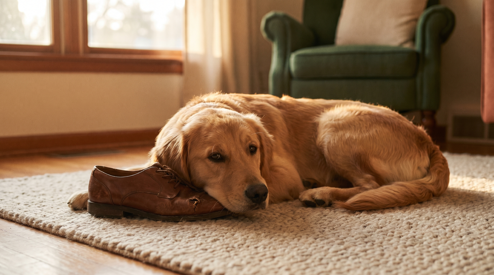

Пришли домой — обувь в клочья, угол дивана раскромсан, наушник за 8 тысяч сгрызен. Стандартный совет «бить газетой и кричать» — единственный способ гарантированно сделать хуже. Собака не «мстит», не «вредничает» и не «не любит вас». Жевание — это поведенческий симптом, у которого есть конкретная причина из шести возможных. Разбираемся, как её определить и убрать корень, а не симптом.
🐾 Не уверены, что это опасно?
Опишите симптом в AnimaLife — AI-ветеринар за минуту подскажет, что в пределах нормы, а когда пора к врачу.
Самая частая причина у собак, живущих в типичной городской семье «8-часовой рабочий день». Жевание происходит исключительно в отсутствие хозяев, часто концентрируется на личных вещах (обувь, диванные подушки, постельное бельё — то, что пахнет владельцем). Дополнительные признаки: вой/лай при уходе, мочеиспускание в стрессе, навязчивое слежение за хозяином дома, паника при сборах.
Что работает: постепенная десенсибилизация — выходы на 30 секунд, потом 2 минуты, 5, 10 минут с возвратом и нейтральным приветствием (не суетой). Параллельно — увеличение физической нагрузки утром (минимум 45-60 минут активной прогулки до ухода). В тяжёлых случаях — консультация ветеринарного бихевиориста и иногда курс анксиолитиков под наблюдением врача (флуоксетин длительно или клонидин ситуационно).
Что НЕ работает: «приучать терпеть», крик при возвращении, наказание задним числом (собака не связывает текущее наказание с поступком, совершённым 4 часа назад).
Щенки в этом возрасте грызут всё подряд физиологически: режутся зубы, дёсны болят, жевание снимает дискомфорт. Это не воспитательная проблема, а биологическая необходимость.
Что работает: охлаждённые жевательные игрушки (морозить минут 30, не больше — лёд из морозилки повреждает эмаль), резиновые игрушки типа KONG с закладкой из паштета, сыромятные жилы небольшого размера, мокрая ткань, замороженная в полоску. Менять 3-4 предмета в ротации, чтобы не приедалось.
Что НЕ работает: игрушки на «вечно», палки с улицы (расщепляются, ранят горло), пластмассовые предметы (откалываются острыми осколками).
Собака — социальное животное с потребностью в задачах и поиске. Если день состоит из «лежать 8 часов в одиночестве + 15 минут вокруг дома», у пса нет другого способа разгрузить нервную систему, кроме как самому найти занятие. Чаще всего «занятие» — это жевание самого аппетитно пахнущего объекта в квартире.
Что работает:
Шум стройки за окном, новый сосед с собакой, переезд, появление ребёнка, гости. Жевание — это самоуспокоение, аналогично грызению ногтей у людей.
Что работает: идентифицировать триггер (часто не очевиден), снизить экспозицию (закрытая дверь в комнату, белый шум, феромонные диффузоры Adaptil — клинически доказанный эффект), дать предсказуемый режим. В тяжёлых случаях — врач.
Когда собака не просто грызёт, но ест ткань, землю, бумагу, пластик, иногда камни. Это не норма. Пика классифицируется как тревожно-компульсивное расстройство и часто связана с дефицитом минералов, особенно цинка, или с тревогой. Опасна тем, что инородные тела в кишечнике — реальная причина экстренной хирургии.
Что делать: к ветеринару немедленно. Анализы (биохимия, минералы, гельминтоз), коррекция рациона, поведенческая терапия. Самолечение не работает.
Особенно у пород с высокой энергией: лабрадор, бордер-колли, маламут, джек-рассел, овчарки. Если рабочая порода живёт городской «лёжа на диване» жизнью, нерасходованная энергия идёт в деструктивное поведение. Это не вина собаки — это вина выбора породы под формат жизни.
Норма: 60-120 минут активной прогулки в день (бег, не «шаг»), 2-3 раза в неделю интенсивные нагрузки (тренировки послушания, аджилити, плавание). Если вы не можете дать это — нужно либо менять подход (выгульщик, доги-сад), либо переоценивать выбор породы при следующем питомце.
🐾 Питомец ведёт себя странно?
AnimaLife расшифрует поведение кошки и собаки и подскажет, что делать. Попробуйте бесплатно прямо в мессенджере.
🐾 Понравился разбор?
Подпишитесь на канал — каждый день разбираем по одному тревожному симптому у кошек и собак: что в пределах нормы, а когда пора к врачу. Подпишитесь, чтобы не пропустить разбор, который может спасти здоровье вашего питомца.
Собака грызёт не потому что «такой характер». В 95% случаев есть конкретная физиологическая или поведенческая причина, и решается она не наказанием, а изменением среды и режима. Иногда — медицинским вмешательством. Время на разбор причины окупается тем, что через 3-4 недели вы перестаёте каждое утро мысленно прощаться с очередным ботинком.